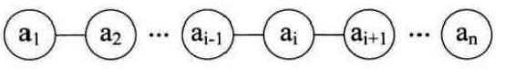

数据结构
数据结构是什么
数据结构是一种数据组织、管理和存储的格式。它是相互之间存在一种或多种特定关系的数据元素的集合。通常情况下，精心选择的数据结构可以带来更高的运行或者存储效率。数据结构往往同高效的检索算法和索引技术相关。
基本概念
- 数据结构三要素：逻辑结构、存储结构、数据的运算；其中逻辑结构包括线性结构（线性表、栈、队列）和非线性结构（树、图、集合）
- 数据是信息的载体，是描述客观事物属性的数、字符及所有能输入到计算机中并被计算机程序识别和处理的符号的集合。
- 数据元素是数据的基本单位，可由若干数据项组成，数据项是构成数据元素的不可分割的最小单位，
- 数据对象是具有相同性质的数据元素的集合，是数据的一个子集
- 数据类型是一个值的集合和定义在此集合上的一组操作的总称
数据类型包括：原子类型、结构类型、抽象数据类型 - 数据结构是相互之间存在一种或多种特定关系的数据元素的集合，它包括逻辑结构、存储结构和数据运算三方面内容
- 数据的逻辑结构和存储结构是密不可分的，算法的设计取决于所选定的逻辑结构，而算法的实现依赖于采用的存储结构
- 数据的存储结构主要有顺序存储、连式存储、索引存储和散列存储
- 施加在数据上的运算包括运算的定义和实现。运算的定义是针对逻辑结构的，指出运算的功能；运算的实现是针对存储结构的，指出运算的具体操作步骤
- 在存储数据时，通常不仅要存储各数据元素的值，而且要存储数据元素之间的关系
- 对于两种不同的数据结构，逻辑结构或物理结构一定不同吗？
数据运算也是数据结构的一个重要方面。对于两种不同的数据结构，他们的逻辑结构和物理结构完全有可能相同（比如二叉树和二叉排序树） - 链式存储设计时，各个不同结点的存储空间可以不连续，但结点内的存储单元地址必须连续
- 算法是对特定问题求解步骤的一种描述，它是指令的有限序列，其中每条指令包括一个或多个操作。
- 算法的五个特性：有穷性、确定性、可行性、输入、输出（字面意思，第一遍看的话建议看看书具体概念）
- 通常设计一个好的算法应考虑：正确性、可读性、健壮性、效率与低存储量需求
- 算法的时间复杂度不仅依赖于问题的规模n，也取决于待输入数据的性质
- 若输入数据所占空间只取决于问题本身而和算法无关，则只需分析除输入和程序之外的额外空间
- 算法原地工作是指算法所需辅助空间为常量，即O(1)
- 一个算法应该是问题求解步骤的描述
- 所谓时间复杂度，是指最欢情况下估算算法执行时间的一个上界
- 同一个算法，实现语言的级别越高，执行效率越低
线性表(List)
定义
线性表的数据集合为{a1,a2,…,an}。其中，除第一个元素a1外，每一个元素有且只有一个直接前驱元素，除了最后一个元素an外，每一个元素有且只有一个直接后继元素。数据元素之间的关系是一对一的关系。

顺序表
概念
用一组地址连续的存储单元依次存储线性表的数据元素，这种存储结构的线性表称为顺序表。
特点
逻辑上相邻的数据元素，物理次序也是相邻的。
本博客所有文章除特别声明外，均采用 CC BY-NC-SA 4.0 许可协议。转载请注明来源 FlyTeng！
 wechat
wechat alipay
alipay
评论